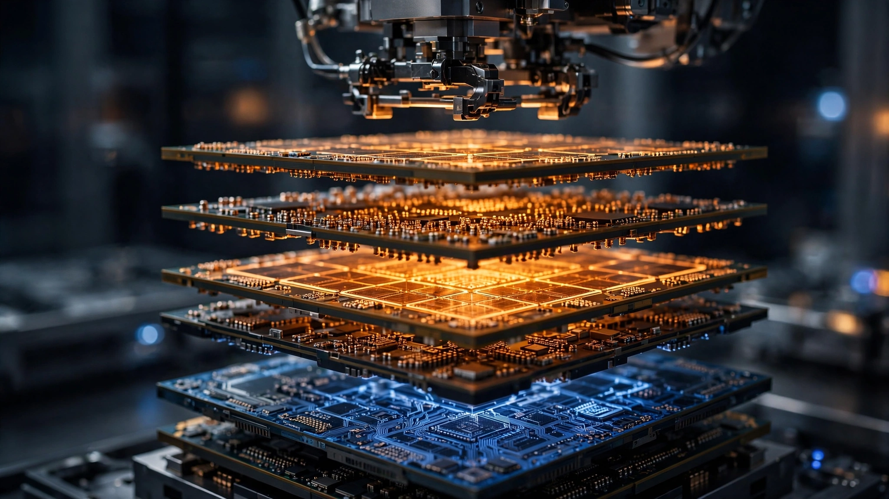

A Chinese Startup Built an AI Chip on 14nm. It Claims to Match 4nm Inference — at One-Tenth the Silicon Cost.
DFSX’s DF1000, unveiled Monday in Shanghai, stacks custom memory directly onto 14nm compute dies using 3D hybrid bonding — bypassing both cutting-edge lithography and the HBM supply chain that SK hynix and Samsung dominate. Running the wafer-cost math reveals a potential 2× advantage in cost per TFLOPS over Nvidia’s 4nm H100. More troubling for Washington: the chip was built entirely with components the export controls were never designed to block.

Remember 4.25×. That is the approximate ratio between what TSMC charges for a 4nm wafer and what a 14nm wafer costs at a foundry like SMIC, and it is about to become the most important number in semiconductor geopolitics. At roughly $17,000 per wafer for N4/N5 versus an estimated $3,500–$4,000 for 14nm, that gap represents a fundamental economic lever that Dongfang Suanxin (DFSX), a Shanghai-based startup valued at $1.8 billion, is now pulling with its first commercial product: an AI inference chip fabricated entirely on mature domestic nodes, stacking custom memory on compute silicon in a 3D package that the company says matches some 4nm Western chips in inference workloads.
Per the Wall Street Journal on Monday, DFSX emerged from stealth with its DF1000 chip alongside a roadmap for DF2000 by year’s end and DF3000 in 2027, backed by state funds and a venture arm co-founded by Alibaba’s Jack Ma, all after deliberately staying quiet since its 2024 founding to “keep its head down and focus on core breakthroughs.”
Those breakthroughs are architectural, not lithographic. Instead of chasing smaller transistors, DFSX uses 3D hybrid bonding to fuse 14nm compute dies with 18nm DRAM dies into a single package where memory sits directly on top of logic and data moves vertically through copper-to-copper bonds rather than horizontally across an interposer, eliminating two dependencies that US export controls specifically targeted: advanced-node fabrication and high-bandwidth memory from the SK hynix/Samsung duopoly.
The Wafer-Cost Math Nobody Has Run
DFSX’s claims are self-reported and no independent benchmarks exist yet, which is a caveat worth etching in silicon. But the underlying economics are calculable from publicly available wafer pricing data, and they reveal why this approach is structurally threatening regardless of whether every performance target lands exactly where the company says.
Start with the silicon: Nvidia’s H100, the benchmark AI inference chip, is fabricated on TSMC’s 4nm process with an 814 mm² die so large that a 300 mm wafer yields roughly 62 maximum die sites, and 4nm yields for dies that size run around 50–55 percent, meaning each good H100 compute die costs approximately $500–$550 before any memory or packaging is added.
Memory doubles that figure because an H100 requires 80 GB of HBM3, sourced almost exclusively from SK hynix, at estimated production costs of $30–$40 per gigabyte, adding another $2,400–$3,200 per chip. TSMC’s CoWoS advanced packaging, the interposer that stitches GPU to HBM stacks, tacks on $500–$700 more. Total estimated silicon-plus-memory cost for one H100: $3,400–$4,450.
Now run the same exercise for a 14nm chiplet design. A chiplet approach uses multiple smaller dies, say four compute tiles at 100 mm² each, and at 14nm a 300 mm wafer accommodates approximately 470 die sites with yields above 90 percent, producing around 420 good dies per wafer at $4,000 per wafer, which puts each die at roughly $9.50, or $38 for four compute tiles. Add custom-stacked 18nm DRAM at commodity pricing of $2–$5 per gigabyte, an order of magnitude below HBM, and the memory for comparable capacity costs perhaps $40–$80. 3D hybrid bonding runs an estimated $200–$400 for packaging. Total: $280–$520.
| Component | Nvidia H100 (4nm) | 14nm Chiplet + Stacked DRAM (est.) |
|---|---|---|
| Compute die(s) | $500–$550 | $38 |
| Memory | $2,400–$3,200 (HBM3) | $40–$80 (stacked DRAM) |
| Packaging | $500–$700 (CoWoS) | $200–$400 (3D hybrid bond) |
| Total | $3,400–$4,450 | $280–$520 |
The silicon cost ratio is approximately 8–12×. Even if real-world production costs are double our estimates (due to yield losses in 3D bonding, testing overhead, and packaging iteration), the 14nm approach still holds a 4–6× cost advantage at the component level.
Cost per TFLOPS: Where Claims Meet Arithmetic
Raw cost advantage means nothing if the chip cannot deliver useful compute. In November 2025, Wei Shaojun, vice chairman of the China Semiconductor Industry Association, described a 14nm-plus-18nm-DRAM architecture at the ICC Global CEO Summit in Beijing that delivered 120 TFLOPS at 2 TFLOPS per watt. DFSX has not disclosed the DF1000’s exact TFLOPS figure, but the DF1000 appears closely related to Wei’s description.
Using Wei’s published numbers as a proxy, the cost-per-TFLOPS comparison looks like this:
- H100: $3,900 (midpoint) ÷ 495 FP16 TFLOPS = $7.88 per TFLOPS
- 14nm stacked (120 TFLOPS): $400 (midpoint) ÷ 120 TFLOPS = $3.33 per TFLOPS
That is a 2.4× advantage in cost per TFLOPS — if the performance claims hold. And for inference specifically, raw TFLOPS is not even the right metric. Inference workloads are memory-bandwidth-bound, not compute-bound: the bottleneck is how fast model weights can be fed to the processor, not how fast the processor can multiply matrices. By eliminating the memory wall through vertical integration, a 3D-stacked architecture attacks the actual constraint rather than the marketing number.
The Three-Pillar Problem
US semiconductor export controls rest on three pillars. Block access to advanced lithography equipment (ASML’s EUV machines). Restrict sales of advanced AI chips (Nvidia’s H100, A100, and successors). Constrain the HBM supply chain that sits overwhelmingly with SK hynix and Samsung, both companies susceptible to US policy pressure.
DFSX’s architecture sidesteps all three:
- No EUV required. 14nm uses deep-ultraviolet (DUV) lithography that SMIC has been producing commercially since 2019, requiring no restricted equipment.
- No restricted chips purchased. The DF1000 is fully domestic, with no Nvidia silicon involved at any point in the supply chain.
- No HBM sourced from controlled suppliers. The architecture replaces HBM entirely with custom-stacked commodity DRAM on 18nm nodes that any competent Chinese memory fab can produce.
The controls assumed a linear relationship between transistor size and AI capability. Make it hard to get small transistors, and you constrain AI performance. DFSX and the broader architectural movement it represents break that assumption by stacking cheap, mature silicon into configurations that approximate what expensive, cutting-edge silicon achieves in a single die.
This Is Not a Chinese-Only Trick
It is worth noting that the architecture is not unique to China. US-based startup d-Matrix has demonstrated 3D digital in-memory compute (3DIMC) that stacks LPDDR5 dies with custom compute chiplets. d-Matrix claims 10× speed and 10× efficiency improvements over HBM for inference. An ISCAS 2026 paper demonstrated a 16nm DNN accelerator achieving 1.60 TOPS/W via 3D spatial data reuse, competitive with state-of-the-art at any node. SK hynix itself has proposed “H3” architectures integrating HBM with high-bandwidth flash for inference.
The physics of near-memory and in-memory computing apply regardless of flag. What China has that no one else does is a geopolitical incentive to commercialize the approach at national scale, and the state-backed capital to do it at a pace the venture-funded Western equivalents cannot match. DFSX went from founding to a $1.8 billion valuation and a shipping product in under two years. d-Matrix, founded in 2019, has its silicon online in the lab but has not announced volume production.
What This Doesn’t Fix
Training. The DF1000 claims parity in inference, not in training frontier models. Training a GPT-4-class system requires tens of thousands of GPUs running in parallel for months, demanding both extreme compute density and inter-node bandwidth that 14nm chiplets cannot deliver today. DFSX acknowledges the gap: the DF2000, due by the end of 2026, aims to narrow it, with the DF3000 in 2027 aiming to close it, though both remain unproven.
Software is the other gap, and potentially the more durable one. Nvidia’s dominance rests as much on CUDA’s 18-year ecosystem lock-in as on transistor counts. DFSX claims a “full-stack software ecosystem,” but building a CUDA competitor with comparable library depth, developer tooling, and model compatibility is a years-long effort that hardware breakthroughs alone cannot shortcut.
And the performance claims themselves are unverified. No independent benchmark organization has tested the DF1000. “Matching 4nm chips in certain inference workloads” is a carefully hedged formulation that could mean anything from running a single model at comparable latency to achieving parity across a narrow set of optimized workloads. The strongest case against this mattering: inference is table stakes and training is what creates frontier AI capability. If China can serve models cheaply but cannot train its own frontier models domestically, the export controls are working where they count. By 2027, Western chips will sit on 2nm and 1.6nm nodes, potentially widening the absolute performance gap even as architecture narrows the cost gap.
The Bottom Line
The US export control framework was designed for a world where AI capability tracked transistor size. DFSX is evidence that world is ending. A $1.8 billion startup just shipped an AI inference chip built on 14nm with commodity memory, at a potential silicon cost roughly one-tenth that of the chips the controls were built to restrict. The architecture does not require anything Washington can block.
That does not mean China has caught up. It means the definition of “caught up” is shifting. Inference is where AI meets the economy — every chatbot query, every image generation, every recommendation engine prediction. If China can serve inference at 2–4× lower cost per token, the commercial impact is enormous even if it cannot train frontier models domestically. Policymakers who assumed lithography was the chokepoint need to look at the packaging floor, where mature silicon is being stacked into configurations that were not in the export control playbook.
What You Can Do
If you work in semiconductor policy: the 3D hybrid bonding supply chain (bonders from EVG, Suss MicroTec, and domestic Chinese equipment makers) is the next node that matters, and it is currently uncontrolled. If you invest in AI infrastructure: monitor inference cost curves separately from training cost curves, because the hardware paths are diverging rapidly. A company that can serve Llama-class inference at $0.001 per 1,000 tokens on 14nm stacked silicon will undercut the $0.01 incumbents regardless of who trained the model. If you build on top of AI APIs: the price floor for inference is about to get geographic competition. Watch Chinese cloud providers’ inference pricing over the next 12 months.